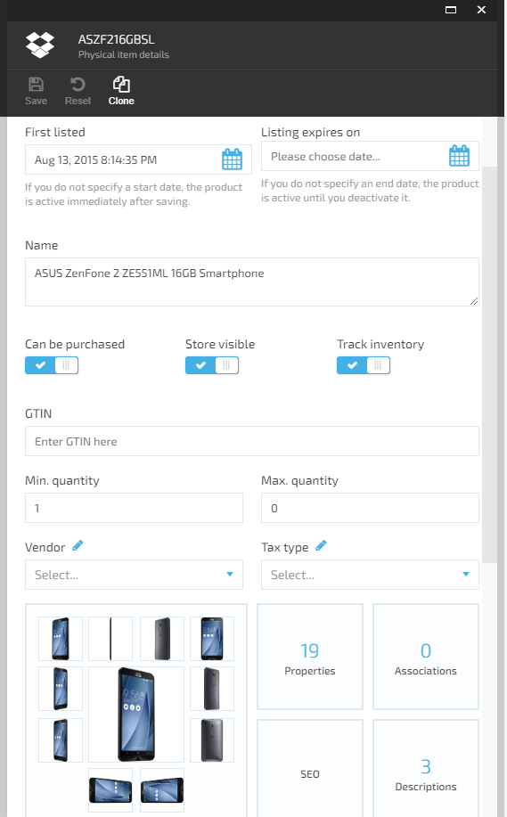
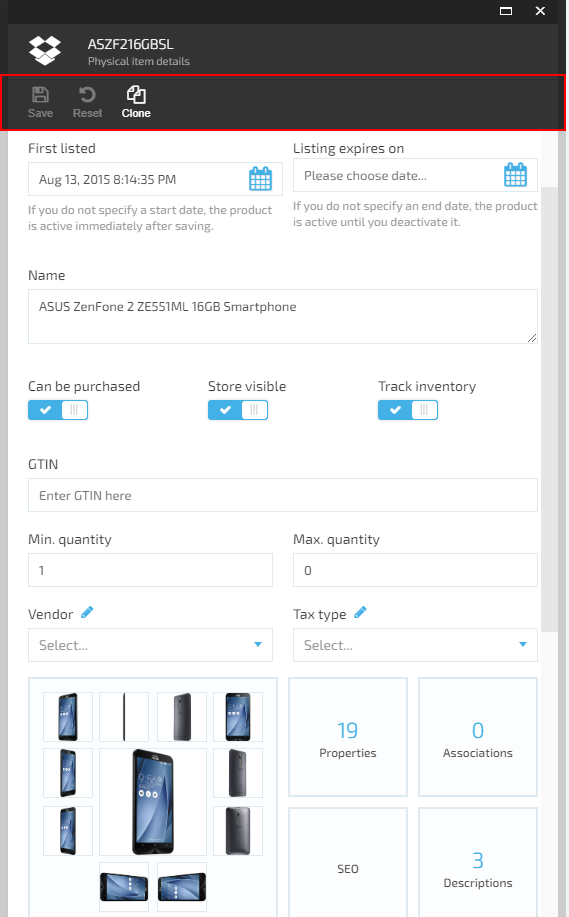
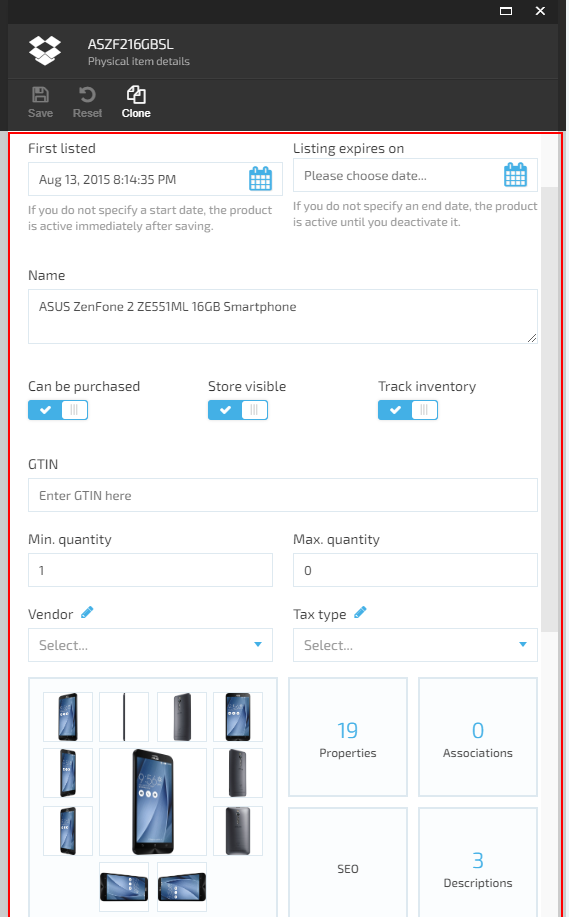
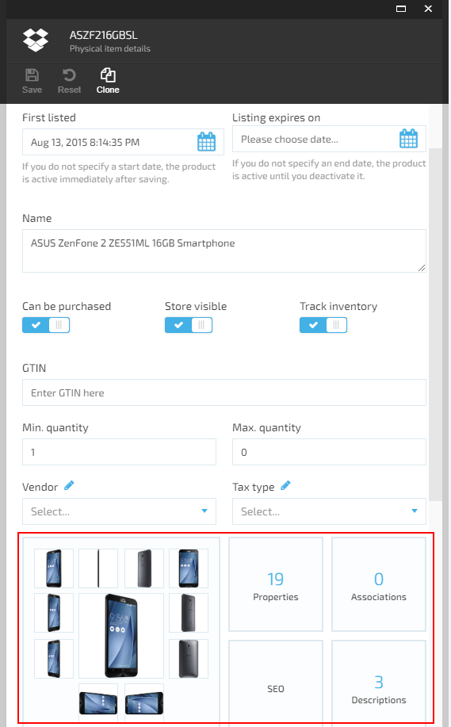
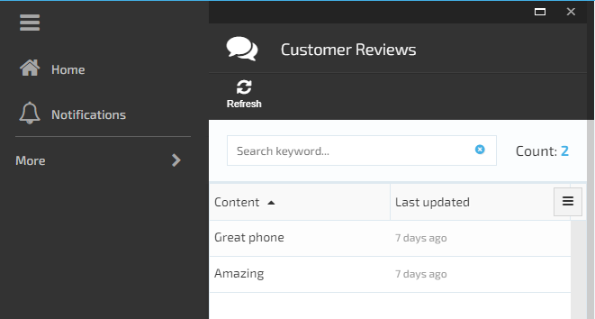
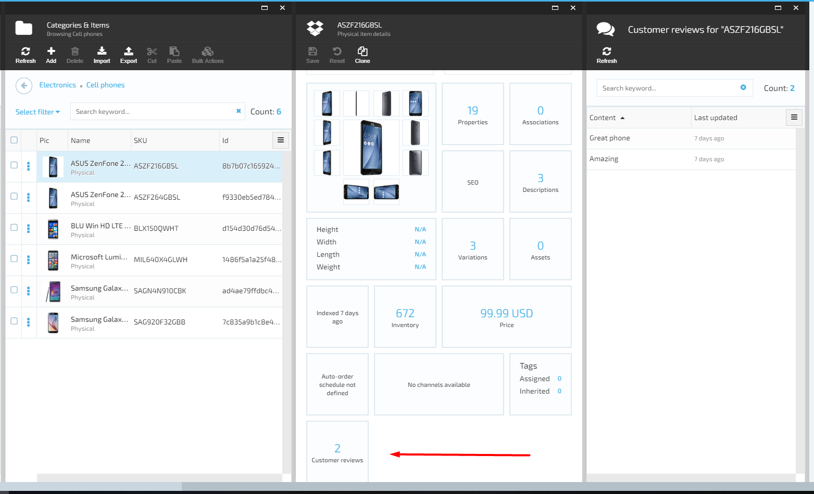

How to build and customize Platform Manager Web UI (AngularJS)
Summary
Use this guide to create Platform Manager UI for the Virto Commerce "Customer Reviews" module (created in the Lesson 3).
After completing this lesson, a Platform Manager UI for the Virto Commerce "Customer Reviews" module will be created, including:
- blade with the customer reviews list for products;
- widget on the product page to view the number of reviews and open the new reviews blade for the product.
Prerequisites
- Installed Virto Commerce Platform Manager
- Visual Studio 2019 or higher
- Basic JavaScript (AngularJS) knowledge
- Passed Lesson 3
Glossary
- JS – JavaScript;
- Platform - Virto Commerce Platform;
- Platform Manager – Virto Commerce Platform Manager, UI for Platform managing;
- VC – Virto Commerce;
- VS – Visual Studio;
- UI – User Interface.
Platform Manager UI elements
The most common extension points for Platform Manager UI are: * Blade * Toolbar * Metaform * Widget
Review these UI elements carefully before you start creating the UI for "Customer Reviews" module.
Blade
Blade is the main UI element of the Platform Manager. Every blade has basic parts such as Maximize, Close buttons on the top and the title, toolbar, main content placeholders following down. You can find out all the blade features on the Blade constructor.

Read more in the Blades and navigation article.
Toolbar
A blade toolbar is a dedicated area inside blade for adding commands. Hereinafter, the toolbar commands shall be referenced to as toolbar items.

Read more in the Blade toolbar article.
Metaform
A metaform is a placeholder (container) control that renders UI content based on provided metadata.

Read more in the Metaform article.
Widget
A widget is a relatively simple and intuitive web UI component in Platform Manager. It has the role of a transient or auxiliary tile, meaning that:
- it occupies just a portion of a blade;
- provides some useful information displayed in place;
- usually enables opening additional blade with extra information and functionality;
- is reusable and can be added to many blades (widget containers) in various places.
A widget container is a placeholder control for individual widgets.

Read more in the Widgets article.
Scripts debugging
In order to enable JS debugging in the Platform, set app setting VirtoCommerce:EnableBundlesOptimizations* value to false*** in platform's Web.config:
<add key="VirtoCommerce:EnableBundlesOptimizations" value="false" />
Use the developer tools inside your browser, to actually debug the JS code. You can read more in Debugging in Chrome article.
Build "Customer reviews" module Web UI
Platform Manager UI elements should be placed in CustomerReviewsModule.Web\Scripts folder. Typical structure of this folder:
- Scripts - the root folder for Platform Manager UI related content:
- blades - folder containing AngularJS controllers and templates for the module blades;
- resources - folder containing AngularJS definitions of the resources (API endpoints) exposed (and used) by this module;
- widgets - folder containing AngularJS controllers and templates for the module widgets;
- module.js - the main entry point for the module UI, containing AngularJS module definition, registrations for menus, widgets, etc.
The Platform Manager also allows localizing UI elements. The localization is based on resources (translation files) placed in CustomerReviewsModule.Web\Localizations folder. Read more in the Localization implementation article.
Create localization for "Customer reviews" module
First of all define the following names for blade and widget:
- blade title;
- blade labels (column names, "no-review" title);
- widget title.
In order to localize defined names, you need to create the translation file \Localizations\en.CustomerReviewsModule.json.
{
"customerReviewsModule": {
"blades": {
"title": "Customer Reviews",
"review-list": {
"labels": {
"content": "Content",
"modifiedDate": "Last updated",
"no-review": "No Customer Reviews found"
}
}
},
"widgets": {
"item-detail": {
"title": "Customer reviews"
}
}
}
}
These translations will be used in blade and widget to label titles and field names in Platform Manager UI.
Define API controller for "Customer reviews" module
To get data from backend, define search API controller method in \CustomerReviewsModule.Web\Scripts\resources\customer-reviews-module-api.js file:
angular.module('customerReviewsModule')
.factory('customerReviewsModule.webApi', ['$resource', function ($resource) {
return $resource('api/CustomerReviewsModule', {}, {
search: { method: 'POST', url: 'api/customerReviewsModule/search' }
});
}]);
More info in AngularJS $resource article.
Define blade for "Customer reviews" list
- Create a new reviews-list.js blade JS file in \Scripts\blades folder and define customerReviewsModule.reviewsListController by adding code to the file:
angular.module('customerReviewsModule')
.controller('customerReviewsModule.reviewsListController', ['$scope', 'customerReviewsModule.webApi', 'platformWebApp.bladeUtils', 'uiGridConstants', 'platformWebApp.uiGridHelper',
function ($scope, reviewsApi, bladeUtils, uiGridConstants, uiGridHelper) {
$scope.uiGridConstants = uiGridConstants;
var blade = $scope.blade;
var bladeNavigationService = bladeUtils.bladeNavigationService;
blade.getSearchCriteria = function () {
return angular.extend(filter, {
searchPhrase: filter.keyword ? filter.keyword : undefined,
sort: uiGridHelper.getSortExpression($scope),
skip: ($scope.pageSettings.currentPage - 1) * $scope.pageSettings.itemsPerPageCount,
take: $scope.pageSettings.itemsPerPageCount
});
};
blade.refresh = function () {
blade.isLoading = true;
reviewsApi.search(blade.getSearchCriteria(), function (data) {
blade.isLoading = false;
$scope.pageSettings.totalItems = data.totalCount;
blade.currentEntities = data.results;
});
};
blade.headIcon = 'fa-comments';
blade.toolbarCommands = [
{
name: "platform.commands.refresh", icon: 'fa fa-refresh',
executeMethod: blade.refresh,
canExecuteMethod: function () {
return true;
}
}
];
// simple and advanced filtering
var filter = $scope.filter = blade.filter || {};
filter.criteriaChanged = function () {
if ($scope.pageSettings.currentPage > 1) {
$scope.pageSettings.currentPage = 1;
} else {
blade.refresh();
}
};
// ui-grid
$scope.setGridOptions = function (gridOptions) {
uiGridHelper.initialize($scope, gridOptions, function (gridApi) {
uiGridHelper.bindRefreshOnSortChanged($scope);
});
bladeUtils.initializePagination($scope.$parent);
};
}]);
- To show a Customer reviews list in a blade create a new reviews-list.tpl.html blade template file in the same folder:
<div class="blade-static">
<div class="form-group">
<div class="form-input __search">
<input placeholder="{{'platform.placeholders.search-keyword' | translate}}" ng-model="filter.keyword" ng-keyup="$event.which === 13 && filter.criteriaChanged()" />
<button class="btn __other" style="position: relative;right: 45px;">
<i class="btn-ico fa fa-times-circle" title="Clear" ng-click="filter.keyword=null;filter.criteriaChanged()"></i>
</button>
</div>
<p class="form-count">{{ 'platform.list.count' | translate }}: <span class="count">{{pageSettings.totalItems | number:0}}</span></p>
</div>
</div>
<div class="blade-static __bottom" ng-if="pageSettings.itemsPerPageCount < pageSettings.totalItems" ng-include="'pagerTemplate.html'"></div>
<div class="blade-content">
<div class="blade-inner">
<div class="inner-block">
<div class="table-wrapper" ng-init="setGridOptions({
useExternalSorting: true,
rowTemplate: 'list.row.html',
columnDefs: [
{ name: 'content', displayName: 'customerReviewsModule.blades.review-list.labels.content' },
{ name: 'modifiedDate', displayName: 'customerReviewsModule.blades.review-list.labels.modifiedDate', sort: { direction: uiGridConstants.DESC }}
]})">
<div ui-grid="gridOptions" ui-grid-auto-resize ui-grid-save-state ui-grid-resize-columns ui-grid-move-columns ui-grid-pinning ui-grid-height></div>
</div>
<p class="note" ng-if="!blade.currentEntities.length">{{ 'customerReviewsModule.blades.review-list.labels.no-review' | translate }}</p>
</div>
</div>
</div>
<script type="text/ng-template" id="list.row.html">
<div ng-click="grid.appScope.blade.selectNode(row.entity)" ng-repeat="(colRenderIndex, col) in colContainer.renderedColumns track by col.uid" ui-grid-one-bind-id-grid="rowRenderIndex + '-' + col.uid + '-cell'" class="ui-grid-cell" ng-class="{'ui-grid-row-header-cell': col.isRowHeader, '__hovered': grid.appScope.contextMenuEntity === row.entity, '__selected': row.entity.id===grid.appScope.selectedNodeId }" role="{{col.isRowHeader ? 'rowheader' : 'gridcell' }}" ui-grid-cell></div>
</script>
- Update the blade shown on activating the
workspace.customerReviewsModuleStatestate in the AngularJS module by editing \Scripts\module.js:
~~~
angular.module(moduleName, [])
.config(['$stateProvider', '$urlRouterProvider',
function ($stateProvider, $urlRouterProvider) {
$stateProvider
.state('workspace.customerReviewsModuleState', {
url: '/customerReviewsModule',
templateUrl: '$(Platform)/Scripts/common/templates/home.tpl.html',
controller: [
'$scope', 'platformWebApp.bladeNavigationService', function ($scope, bladeNavigationService) {
var newBlade = {
id: 'reviewsList',
title: 'customerReviewsModule.blades.review-list.title',
controller: 'customerReviewsModule.reviewsListController',
template: 'Modules/$(CustomerReviewsModule)/Scripts/blades/reviews-list.tpl.html',
isClosingDisabled: true
};
bladeNavigationService.showBlade(newBlade);
}
]
});
}
])
~~~
When the state is "activated", the blade's controller is bound to its template and the new blade is shown.
- Add a new menu item in main menu for the blade and define menu item permissions by editing \CustomerReviewsModule.Web\Scripts\module.js:
~~~
.run(['platformWebApp.mainMenuService', 'platformWebApp.widgetService', '$state',
function (mainMenuService, widgetService, $state) {
//Register module in main menu
var menuItem = {
path: 'browse/customerReviewsModule',
icon: 'fa fa-comments',
title: 'Customer Reviews',
priority: 100,
action: function () { $state.go('workspace.customerReviewsModuleState') },
permission: 'CustomerReviewsModule:read'
};
mainMenuService.addMenuItem(menuItem);
}
]);
~~~
- Delete \CustomerReviewsModule.Web\Scripts\blades\hello-world.html and \CustomerReviewsModule.Web\Scripts\blades\hello-world.js files, that were created in the Lesson 3 from Visual Studio template.
Save all changes, restart the Platform application and open blade in main menu. You should see existing Customer reviews list:

Define widget for "Customer reviews" module
-
Add new widgets subfolder inside Scripts folder.
-
Create a new customerReviewWidget.js widget JS file in widgets folder and define customerReviewsModule.customerReviewWidgetController by adding code to the file:
angular.module('customerReviewsModule')
.controller('customerReviewsModule.customerReviewWidgetController', ['$scope', 'customerReviewsModule.webApi', 'platformWebApp.bladeNavigationService', function ($scope, reviewsApi, bladeNavigationService) {
var blade = $scope.blade;
var filter = { take: 0 };
function refresh() {
$scope.loading = true;
reviewsApi.search(filter, function (data) {
$scope.loading = false;
$scope.totalCount = data.totalCount;
});
}
$scope.openBlade = function () {
if ($scope.loading || !$scope.totalCount)
return;
var newBlade = {
id: "reviewsList",
filter: filter,
title: 'Customer reviews for "' + blade.title + '"',
controller: 'customerReviewsModule.reviewsListController',
template: 'Modules/$(CustomerReviewsModule)/Scripts/blades/reviews-list.tpl.html'
};
bladeNavigationService.showBlade(newBlade, blade);
};
$scope.$watch("blade.itemId", function (id) {
filter.productIds = [id];
if (id) refresh();
});
}]);
- Create a new customerReviewWidget.tpl.html widget template file in the same folder:
<div class="gridster-cnt" ng-click="openBlade()">
<div class="cnt-inner">
<div class="list-count" ng-if="loading">...</div>
<div class="list-count" ng-if="!loading">{{ totalCount }}</div>
<div class="list-t" ng-if="!loading">{{ 'customerReviews.widgets.item-detail.title' | translate }}</div>
</div>
</div>
- "Inject" the new widget into the Product detail UI, by registering it in module.js:
~~~
.run(['platformWebApp.mainMenuService', 'platformWebApp.widgetService', '$state',
function (mainMenuService, widgetService, $state) {
//Register module in main menu
var menuItem = {
path: 'browse/customerReviews',
icon: 'fa fa-comments',
title: 'Customer Reviews',
priority: 100,
action: function () { $state.go('workspace.customerReviews') },
permission: 'customerReview:read'
};
mainMenuService.addMenuItem(menuItem);
//Register reviews widget inside product blade
var itemReviewsWidget = {
controller: 'customerReviewsModule.customerReviewWidgetController',
template: 'Modules/$(CustomerReviewsModule)/Scripts/widgets/customerReviewWidget.tpl.html'
};
widgetService.registerWidget(itemReviewsWidget, 'itemDetail');
}
]);
~~~
Save all changes, restart application and open Product detail blade. You should see the new widget added and showing actual number of existing reviews for the product. If you click the widget, a new blade should appear, showing with the list of Customer reviews for the product.
